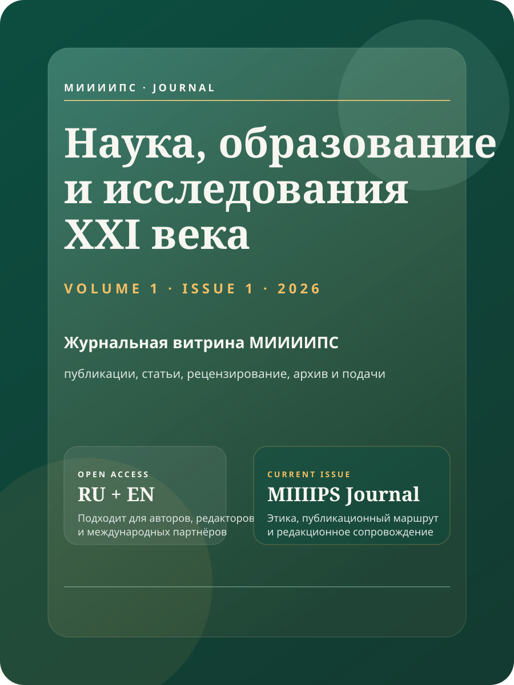

Конференции · 9 апреля 2026
Data Fusion как зеркало рынка данных и искусственного интеллекта
Редакционный обзор о том, почему конференции по данным важны для образовательной и исследовательской повестки МИИИИПС.
ЧитатьМеждународное научно-просветительское медиа о конференциях, исследованиях, образовании, искусственном интеллекте, психологии, спорте и публичной деятельности института.
Научный журнал МИИИИПС остаётся местом для статей, выпусков и рецензирования. Global Review становится редакционной витриной для новостей, событий, интервью и международной повестки.
Каждая рубрика ведёт на самостоятельную страницу. Календарь мероприятий не смешивается с редакционной лентой: событие остаётся событием, а медиа делает по нему новость, обзор или интервью.
Публикации ведут повестку института: не копируют источники, а объясняют события через профиль МИИИИПС.
Редакционный обзор о том, почему конференции по данным важны для образовательной и исследовательской повестки МИИИИПС.
Читать
Как открытые встречи переводят психологические темы из частной консультации в формат просвещения и дискуссии.
Читать
Профиль главного редактора направления: почему медиа института должно быть понятным, спокойным и доказательным.
Читать
Почему тема эмоциональной грамотности становится частью международной образовательной повестки.
Читать
Разбор архитектуры: где живут статьи, где новости, и почему эти контуры не стоит смешивать.
Читать
Источник, дата, проверка фактов, нейтральный тон и редакционная ответственность.
Читать
Директор АНО МИИИИПС и главный редактор медиа-направления. Отвечает за спокойный тон, проверку источников, уважение к человеку и связку медиа с научным журналом института.
Открыть профиль редакции